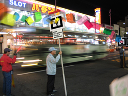

digital networks, digital freedom, public space, augmented reality Free Network Visible Network combines different tools and processes to visualize, floating in the space, the interchanged information between users of a network. People are able to experience how colorful virtual objects, representing the digital data, are flying around. These virtual objects will change their shape, size and color in relation to the different characteristics of circulating information in the network. Using the Visible Network Client users can superimpose images, texts, sounds and 3D models on the urban space customizing it and participating on the design of the city. Free Visible Network is done in collaboration with Liu Wei, Duy Nguyen and Adrian Cheok at IERC, Nanyang Technological University, Singapore.
Abstract Free Network Visible Network is a project that combines different tools and processes to visualize, floating in the space, the interchanged information between users of a network. The people are able to experience how colorful virtual objects, representing the digital data, are flying around. These virtual objects will change their shape, size and color in relation with the different characteristics of the information that is circulating in the network. In the last 20 years the digital information has flooded the world in which we live. No matter where we are, even if we are not able to see it, we can imagine ourselves surrounded by data. This data, in spite of its digital nature, is connecting people by communication, is full of information that contains knowledge, ideas, feelings and emotions. The space of digital networks is also the space of invisible meanings that represents relations between people and a very dynamic knowledge interchange. But unfortunately not everybody is able to access to this knowledge because of technical, economical and sometimes political limitations. The great part of the digital networks is restricted and sometimes the information is filtered depending on economic or ideological criteria that affect the final receiver. By the metaphorical representation of these invisible meanings, this project wants to act in the urban landscape as a way to create new strategies in the public domain and to claim, by means of artistic actions, the freedom of citizens to accede and control the digital space of communication, to create Free Networks that provide open and free transit of information to everybody. URLS:
project web site personal web site of Clara Boj & Diego Diaz IERC web site |